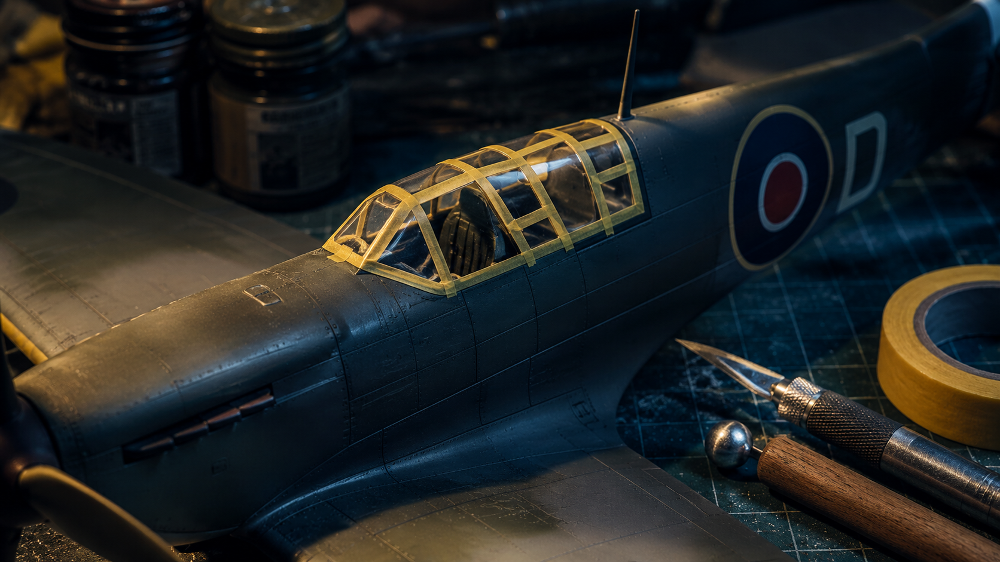

Easy · 20–40 mins
Canopy masking
Tools: Masking tape, fresh blade, cocktail stick, burnisher, tweezers.
Process: Polish and clean the clear parts first. Lay thin tape strips over each frame line, burnish the edges, then trim back to the frame with a brand-new blade. Spray the interior frame colour first, then the exterior camouflage so the framing looks correct from both sides.
Common mistake: Do not force thick tape around tight corners and do not flood paint against mask edges.
Watch technique video